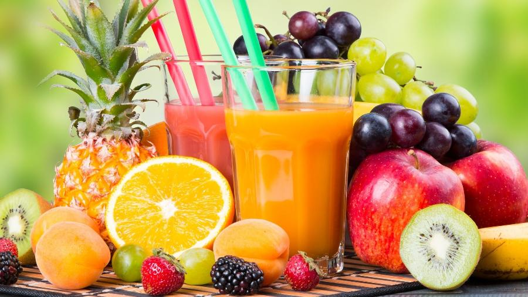

.png)
Sucos naturais
Sempre que possível, prefira as opções mais naturais possíveis, trazendo uma proposta diferenciada e saudável ao cardápio. Existem diferentes tipos de sucos naturais. As mais encontradas no mercado são:
- Abacaxi, maçã e gengibre
Ingredientes
4 rodelas de abacaxi
1 maçã em pedaços
Gengibre a gosto
Modo de preparo:
No liquidificador, bata os ingredientes até que a mistura fique homogênea. Como a maçã é bem doce, este suco dispensa açúcares ou adoçantes.
- Acerola, laranja e maçã
Ingredientes
1 copo de suco de laranja
2 maçãs em pedaços (sem sementes)
8 acerolas
Modo de Preparo:
Bata todos os ingredientes no liquidificador – as acerolas podem ir com as sementes. Quando a mistura ficar uniforme, desligue, coe em uma peneira e sirva.
- Maracujá, abacaxi, hortelã e limão
Ingredientes
1 xícara (chá) de polpa de maracujá
2 rodelas de abacaxi
1 xícara (chá) de suco de limão
Hortelã a gosto
Modo de preparo:
Misture todos os ingredientes no liquidificador e bata até ficar homogêneo. Coe o suco, adoce e sirva bem gelado.
- Pink lemonade
Ingredientes
2 limões sicilianos
2 xícaras (chá) de água
1 xícara (chá) de groselha
Gelo a gosto
Modo de preparo:
Esprema bem os limões para retirar o suco e adicione-os em uma jarra com o restante dos ingredientes. Misture bem e sirva gelado.